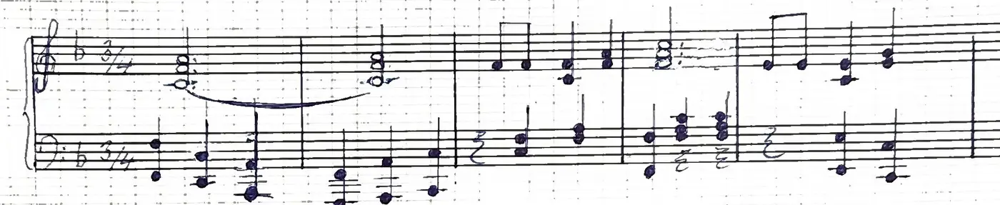

Hear the music in a handwritten score
Send photos of the pages. You get back a recording, a clean score, and a page where the original and the transcription play bar by bar, with every unclear note marked so your family can check it.
Send a manuscriptIt started with my grandfather's notebook
My grandfather, Dr. Zoltán Rényi, wrote piano pieces in a squared school notebook: a waltz for his wife Olga, a waltz for his daughter Maria, my mother, two hymns and one waltz without a title. Six pages in ink, probably from the 1950s, when my mother was born. Nobody in my family reads music well enough to play them, and the phone apps that scan sheet music could not read his handwriting.

So I had the pages read note by note, with every uncertain note written down instead of guessed silently: 97 of them. A second, closer reading cleared most of those and corrected seven bars. The thirteen that are left are marked on the page for anyone in the family who reads music.
Sampled grand piano playing exactly the notes on the page. The whole notebook, with each original bar shown over its transcription while it plays: renyi.dravec.org (in Slovak; open "Porovnať s rukopisom").
How it works
- Photograph the pages with your phone, in daylight, one page per photo.
- We read and check them. An AI model makes the first reading; every note it is unsure of is marked with the reason, and I check the result before it goes to you.
- You get your study: a link that plays on any phone, the score as a PDF, MP3 recordings, and the page where original and transcription play together. Family members can tap any marked bar and say "correct" or "wrong" from their phone.
The small print
- Free for the first ten manuscripts. No account, no subscription.
- Piano music (two staves) works best. Choir parts, other instruments or old letters: send them anyway and I will tell you honestly what is possible.
- About a week. If there is a date you need it for, say so.
- Nothing is published without your permission. The files are yours.
- The recording is a sampled piano playing the notes, not a performance.
- The tool is open source: github.com/Chartres/manuscript-study.